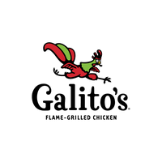

GALITO'S
Galito's is a South African multinational fast casual chain that specialises in Portuguese style flame-grilled peri-peri chicken. Founded in Nelspruit, South Africa in 1996, Galito's operates over 210 outlets in 17 countries. It was founded by former Nando's franchisee Louis Germishuys. Germishuys decided to establish his own flame-grilled chicken restaurant after Nando's listed and started buying out franchisees. He developed his own range of sauces with one of his employees, Felix Mokoena, in is home garage before opening his first Galito's restaurant next door to a Nando's restaurant. The chain has restaurants in Canada, Kenya, Malaysia, Pakistan, the UAE, Kazakhstan, India, South Africa, Serbia and Zambiap>